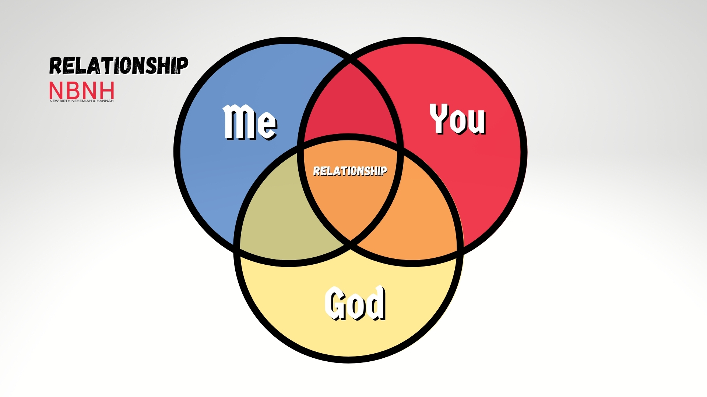

 This series “Relationship” has a special place in our church’s heart. We were challenged to know God intently, mature in our walk, and to heal so can move on. It’s easier said than done, but the results for those who make the sacrifice will be evident. Dive into this series and let’s grow in our relationships.
1 Samuel 17:41–47 NKJV
So the Philistine came, and began drawing near to David, and the man who bore the shield went before him.
And when the Philistine looked about and saw David, he disdained him; for he was only a youth, ruddy and good-looking.
So the Philistine said to David, “Am I a dog, that you come to me with sticks?” And the Philistine cursed David by his gods.
And the Philistine said to David, “Come to me, and I will give your flesh to the birds of the air and the beasts of the field!”
Then David said to the Philistine, “You come to me with a sword, with a spear, and with a javelin. But I come to you in the name of the Lord of hosts, the God of the armies of Israel, whom you have defied.
This day the Lord will deliver you into my hand, and I will strike you and take your head from you. And this day I will give the carcasses of the camp of the Philistines to the birds of the air and the wild beasts of the earth, that all the earth may know that there is a God in Israel.
Then all this assembly shall know that the Lord does not save with sword and spear; for the battle is the Lord’s, and He will give you into our hands.”
The way you get over, and succeed is based on who you know. With that in mind be careful of the taste you leave after communicating with people.
A personal relationship with God. will help you to win, give you a knew perspective, and a sharpened faith.
Stay connected while you serve, stay connected when someone throws something at you because the miracle, and the resolve is in the connection.
How many of us want to get the answer but don’t want to go to the frontline. Sometimes what it takes, we don’t want to do; It’s hard to believe the change is through us
You don’t have to fast all the time, but you can set yourself aside to seek God, because when we are connected we will have good timing
David turned to God for direction and information. When you are well informed you are able to do well with time.
Daniel 3:10-29 NIV
Your Majesty has issued a decree that everyone who hears the sound of the horn, flute, zither, lyre, harp, pipe and all kinds of music must fall down and worship the image of gold,
and that whoever does not fall down and worship will be thrown into a blazing furnace.
But there are some Jews whom you have set over the affairs of the province of Babylon—Shadrach, Meshach and Abednego—who pay no attention to you, Your Majesty. They neither serve your gods nor worship the image of gold you have set up.”
Furious with rage, Nebuchadnezzar summoned Shadrach, Meshach and Abednego. So these men were brought before the king,
and Nebuchadnezzar said to them, “Is it true, Shadrach, Meshach and Abednego, that you do not serve my gods or worship the image of gold I have set up?
Now when you hear the sound of the horn, flute, zither, lyre, harp, pipe and all kinds of music, if you are ready to fall down and worship the image I made, very good. But if you do not worship it, you will be thrown immediately into a blazing furnace. Then what god will be able to rescue you from my hand?”
Shadrach, Meshach and Abednego replied to him, “King Nebuchadnezzar, we do not need to defend ourselves before you in this matter.
If we are thrown into the blazing furnace, the God we serve is able to deliver us from it, and he will deliver us[a] from Your Majesty’s hand.
But even if he does not, we want you to know, Your Majesty, that we will not serve your gods or worship the image of gold you have set up.”
Then Nebuchadnezzar was furious with Shadrach, Meshach and Abednego, and his attitude toward them changed. He ordered the furnace heated seven times hotter than usual
and commanded some of the strongest soldiers in his army to tie up Shadrach, Meshach and Abednego and throw them into the blazing furnace.
So these men, wearing their robes, trousers, turbans and other clothes, were bound and thrown into the blazing furnace.
The king’s command was so urgent and the furnace so hot that the flames of the fire killed the soldiers who took up Shadrach, Meshach and Abednego,
and these three men, firmly tied, fell into the blazing furnace.
Then King Nebuchadnezzar leaped to his feet in amazement and asked his advisers, “Weren’t there three men that we tied up and threw into the fire?”
They replied, “Certainly, Your Majesty.”
He said, “Look! I see four men walking around in the fire, unbound and unharmed, and the fourth looks like a son of the gods.”
Nebuchadnezzar then approached the opening of the blazing furnace and shouted, “Shadrach, Meshach and Abednego, servants of the Most High God, come out! Come here!” So Shadrach, Meshach and Abednego came out of the fire,
and the satraps, prefects, governors and royal advisers crowded around them. They saw that the fire had not harmed their bodies, nor was a hair of their heads singed; their robes were not scorched, and there was no smell of fire on them.
Then Nebuchadnezzar said, “Praise be to the God of Shadrach, Meshach and Abednego, who has sent his angel and rescued his servants! They trusted in him and defied the king’s command and were willing to give up their lives rather than serve or worship any god except their own God.
Therefore I decree that the people of any nation or language who say anything against the God of Shadrach, Meshach and Abednego be cut into pieces and their houses be turned into piles of rubble, for no other god can save in this way.”
Trust in God needs to be strong enough to rely on His truth, ability, and strength to see you through.
Like the 3 Hebrew boys they gained access to power in governance by trusting in the lord. You will also gain access when you trust in the Lord.
When you gain access it is a form of glory and power, however not to be used as an advantage but to point it back to God through doing unto others as you would want them to do unto you.
With glory and power it is very easy for pride to step in and make a mess of everything. You must keep in mind that if God didn’t say it, don’t trust it.
Proverbs 4:23-27 NIV
Above all else, guard your heart, for everything you do flows from it.
Keep your mouth free of perversity; keep corrupt talk far from your lips.
Let your eyes look straight ahead; fix your gaze directly before you.
Give careful thought to the[a] paths for your feet and be steadfast in all your ways.
Do not turn to the right or the left; keep your foot from evil.
How you use your authority will determine how you relate with others. Phillipians 2:2-6 states how Jesus being equal with God didn’t use that to his advantage when relating to others. He related to other not from authority, but from His humanity.
Friends are important and they can be very helpful when you are down. We will do well to nourish relationships as they are the way we move forward.
Proverbs 4:23 states that from your heart flows rivers of life. If you haven’t healed from somethings, what flows from you can be toxic to others. Do well to heal so that you can be renewed in strength and take on whats next.
You must have the desire to heal or you will make excuses for every reason you are the way you are. You must let go of the past to embrace the future and as you heal God will make it clearer why things are the way they are.
John 15:1-12, 16 KJV
I am the true vine, and my Father is the husbandman.
Every branch in me that beareth not fruit he taketh away: and every branch that beareth fruit, he purgeth it, that it may bring forth more fruit.
Now ye are clean through the word which I have spoken unto you.
Abide in me, and I in you. As the branch cannot bear fruit of itself, except it abide in the vine; no more can ye, except ye abide in me.
I am the vine, ye are the branches: He that abideth in me, and I in him, the same bringeth forth much fruit: for without me ye can do nothing.
If a man abide not in me, he is cast forth as a branch, and is withered; and men gather them, and cast them into the fire, and they are burned.
If ye abide in me, and my words abide in you, ye shall ask what ye will, and it shall be done unto you.
Herein is my Father glorified, that ye bear much fruit; so shall ye be my disciples.
As the Father hath loved me, so have I loved you: continue ye in my love.
If ye keep my commandments, ye shall abide in my love; even as I have kept my Father’s commandments, and abide in his love.
These things have I spoken unto you, that my joy might remain in you, and that your joy might be full.
This is my commandment, That ye love one another, as I have loved you.
Ye have not chosen me, but I have chosen you, and ordained you, that ye should go and bring forth fruit, and that your fruit should remain: that whatsoever ye shall ask of the Father in my name, he may give it you.
Our bodies are the temple of the holy spirit, don’t do things to it such as eating wrong things that damage it.
What you do with your body should glorify God.
Picture your life as a shoe today, and consider where did you go, what did you do, and did you clean it.
Weeds don’t need any attention to grow, but good plants need much attention.
Consider if you are teachable, reachable, and restorable.
Lastly, consider your trauma, because in order to function whole, you must be made whole.
Join Us In Service On Sundays At 11:30am Online On YouTube Or In Person At 3321 Avenue I, Brooklyn NY 11210
For more information Email us at nbnhmedia@gmail.com